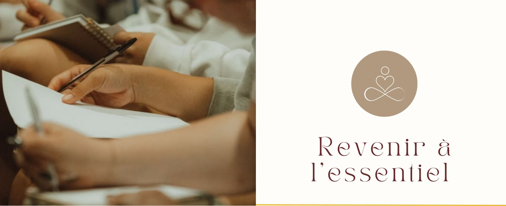
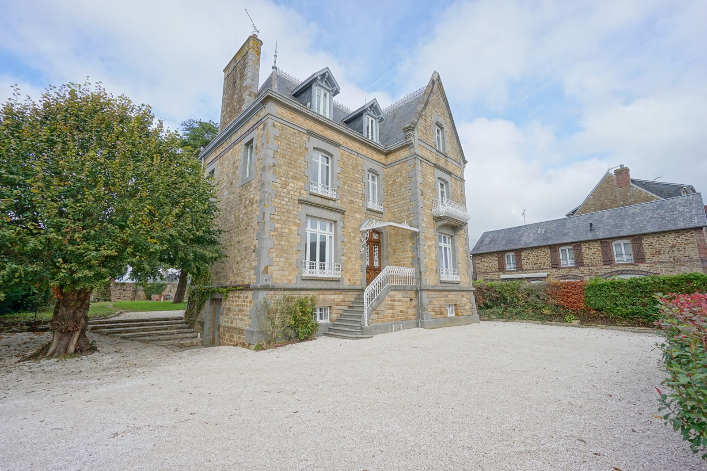
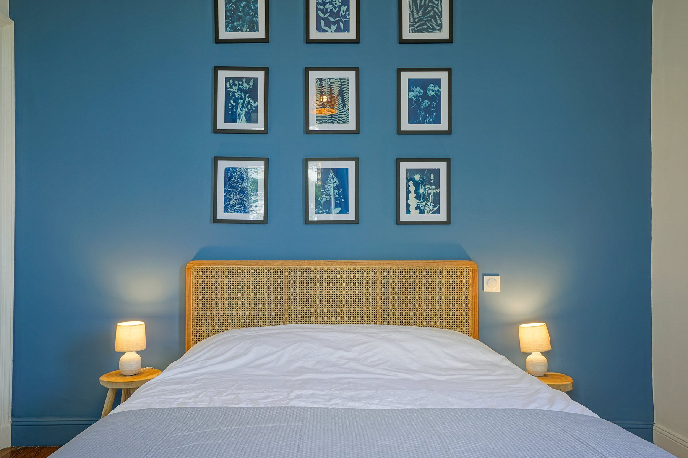
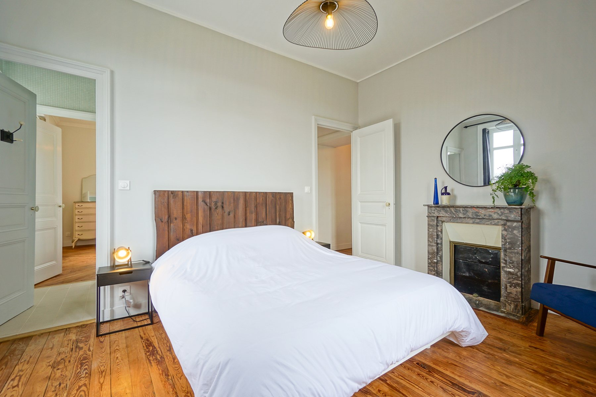
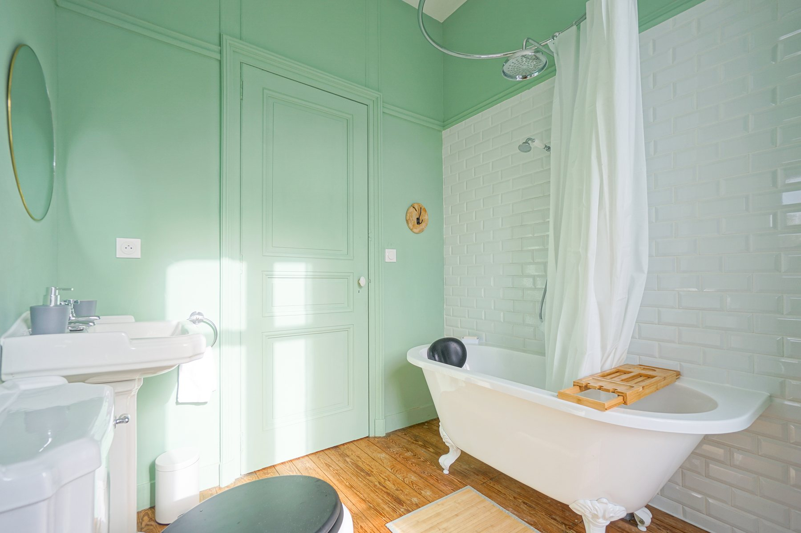
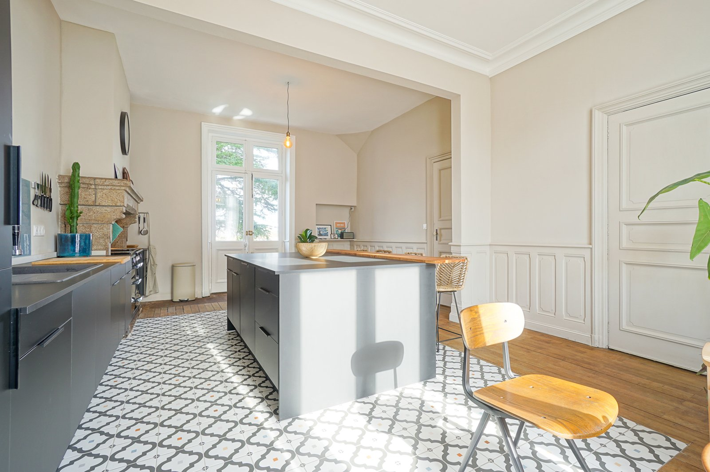
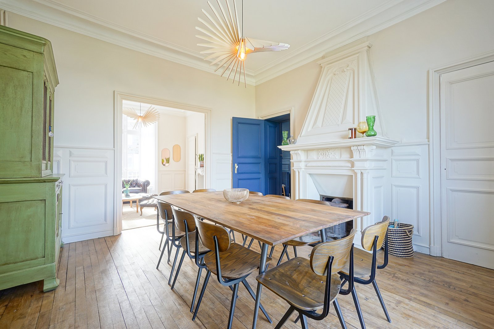

Offre-toi cinq jours hors du temps dans un charmant manoir niché au cœur de la Normandie, à seulement vingt minutes du Mont-Saint-Michel.
Dans un cadre paisible et enchanteur, cette retraite a été pensée comme une invitation à faire une pause, à ralentir et à retrouver un lien plus authentique avec toi-même.
Au fil des journées, tu seras guidé(e) à travers des ateliers de développement personnel, des pratiques corporelles et des temps de réflexion pour mieux comprendre ton fonctionnement, accueillir tes émotions et renforcer tes ressources intérieures.
Une expérience profondément humaine, mêlant introspection, partage, douceur et transformation.
Arrivée : mercredi à partir de 16h. Départ : dimanche après le déjeuner, vers 14h.
Le manoir se situe à 20 minutes du Mont-Saint-Michel, dans un environnement calme et verdoyant. Gare d'Avranches à environ 10 minutes en voiture, gare de Villedieu-les-Poêles à environ 20 minutes en voiture.
Quelques semaines avant le séjour, un groupe WhatsApp sera créé afin de permettre aux participantes de faire connaissance et de faciliter l'organisation des trajets et du covoiturage.
Non inclus : le transport jusqu'au lieu du séjour, l'assurance voyage et la serviette de piscine.






Un premier temps ensemble pour faire connaissance, poser le cadre du séjour et ouvrir ces quelques jours par un cercle de parole.
Tes émotions ont un message à te transmettre. Lors de cet atelier, tu apprendras à mieux les comprendre, à identifier les besoins qu'elles révèlent et à développer une relation plus apaisée avec ton monde intérieur.
Exprimer tes besoins, poser tes limites et dire non sans culpabilité sont des compétences essentielles pour construire des relations plus équilibrées. Cet atelier t'aidera à trouver ta juste place dans la relation à l'autre.
Certaines blessures du passé continuent parfois d'influencer nos relations actuelles. Tu exploreras les schémas qui se répètent dans ta vie afin de gagner en compréhension, en liberté et en sérénité.
Prendre conscience de tes forces, clarifier ce qui est vraiment important pour toi et te reconnecter à tes valeurs pour avancer avec davantage de confiance et d'alignement.
Un temps pour ralentir, déposer les tensions du quotidien et revenir pleinement à l'instant présent.
À travers la sophrologie et des exercices guidés, tu apprendras à renforcer ton sentiment de sécurité intérieure et à développer une confiance plus stable et durable.
Ton corps possède une intelligence précieuse. Cette journée t'invitera à écouter davantage tes ressentis, à retrouver confiance en ton intuition et à te reconnecter à tes besoins profonds.
Intégrer les apprentissages vécus durant le séjour, renforcer les ressources découvertes et repartir avec une vision claire et positive de la suite de ton chemin.
Coach en développement personnel spécialisée dans les schémas issus de l'enfance, Jade accompagne chacun vers une meilleure compréhension de soi grâce à une approche centrée sur le présent, l'accueil émotionnel et les outils de thérapie brève.
« La vulnérabilité n'a jamais été et ne sera jamais une faiblesse. »
Sophrologue et coach en développement personnel, Meg-Anne accompagne celles et ceux qui souhaitent retrouver un mieux-être durable. À travers des pratiques douces et accessibles, elle crée des espaces où chacun peut ralentir, respirer, se reconnecter à son corps et retrouver ses propres ressources.
« Mon souhait est que chacun puisse repartir en ayant retrouvé un peu plus de douceur envers lui-même. »
Parce qu'il suffit parfois de quelques jours loin du bruit du quotidien pour entendre à nouveau ce qui est essentiel.
Et si tu t'accordais enfin l'espace dont tu as besoin pour ralentir, te recentrer et retrouver ce qui compte vraiment pour toi ?
Je m'inscrisOn vérifie les disponibilités ensemble et on répond à toutes tes questions avant de confirmer. L'inscription se finalise à la fin de l'appel.